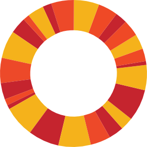

@jsgeorgia | 0pen d@t@
http://www.jumpstart.ge/
we have a vision for an open georgian government!
we envision an informed, all-inclusive citizenry making evidence-based decisions and participating in government processes, mechanisms, and activities
voting alone does not an open government make
informed = has access to all relevant information to understand an issue
an open government is one where all equally have access to all relevant information about important issues that affect our lives
data → information → understanding → informed decisions
equal access to relevant information = a government, which by default, proactively discloses its data
we have a vision for open data!
open data is the currency of an open and transparent government
open data, while grounded in law, has a spirit, and it is behind the embodiment of this spirit that we stand
open data is not just for government, but for civil society organizations too
donors should stipulate open data requirements in contracts
open data is about users: how users are able to interface with data is a reflection of the commitment of the agency providing the data to truly inform and empower the public
we have a vision for an open georgian government!
@jsgeorgia | #jsgccdata
http://www.jumpstart.ge/
მადლობა!